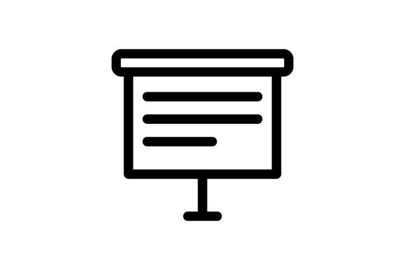

About me

Hello, my name is Damien Payet, and I'm a student in my 3rd year of BUT in Networks and Telecommunications at the IUT in Saint Pierre. Here you can find out more about me and the skills I've acquired during my training.
Download my CVMy IT skills
Html/css
Python
C Language
JavaScript
Php
Java
About me

Introducing
My name is Payet Damien, I'm 20 and I'm currently in my 3rd year of the BUT Réseaux et Télécommunications.
Degree
I have a baccalaureate with specializations in mathematics, engineering and digital sciences and computer science, and a Brevet d'Initiation Aéronautique.

Leisure
In my spare time, I like to play video games and do sports, like weight training and badminton.
My projects